主張
成果が出ても楽しめない仕事は、自分にとっての天職ではない。楽しさの中心は「コードを書く」から「ビジネスを創る」へ移っていった。
対象の視聴者
成果は出ているのに仕事が楽しくない、「向いているから続けるべきか」と迷っている人。キャリアの次の一手を考えているエンジニア・PM。
持ち帰ってほしいこと
「結果が出る」と「楽しい」は別の物差しだと気づくこと。そして、自分の「楽しい」がいまどこにあるか（休日か、平日か、別の何か）を一度確かめること。
ナレーション方針
なし。テロップ（キネティックタイポグラフィ）で語る。全カット共通。追加する場合はユーザーの明示依頼のあとに別途設計する。
構成と尺の配分
| 章 | 伝えること | カット・時間 | 尺 |
|---|---|---|---|
| 導入 | 「仕事は辛いもの」という前提と、いまの実感を対比して問いを立てる | 01–02 0:00–0:16 | 約16秒 |
| 20代：成果は出るが、楽しくない | 休日だけが楽しい。結果が出るので「天職かも」と思い込む | 03–06 0:16–0:49 | 約33秒 |
| 30歳・香港：楽しいが平日へ | 趣味の技術が仕事になり、楽しい仕事でも評価されると知る | 07–09 0:49–1:12 | 約23秒 |
| 帰国：天職ではないと気づく | 再び成果は出たが楽しくない。成果≠天職という主張の核 | 10–12 1:12–1:36 | 約24秒 |
| 楽しさの中心が移る | コードを書く楽しさから、ビジネスを創る楽しさへ | 13–15 1:36–2:02 | 約26秒 |
| 結び | 楽しいと仕事の方向をそろえる。留保を残して問いを返す | 16–18 2:02–2:28 | 約26秒 |
| エンドロゴ | 制作表示 | 19 2:28–2:33 | 約5秒 |
合計 約153秒（約2分33秒）。テロップ約665字。目安の7字/秒で読むと約95秒＋文ごとの間で、残りを図・転換を見る時間に充てる。アイデア段階の約800字は、図を見る時間を足すと約2分45秒を超えるため、約665字に削った。
動きの方針
- 軸の動き：「楽しい」（アンバー）という語が、人生の段階ごとに居場所を変える。20代＝休日の枠（04）、30歳〜＝平日の枠（08・12）、いま＝ビジネスの枠（13〜15）。同じ枠の構図を繰り返し、位置の変化だけで物語を運ぶ。
- 段階の切り替え：横一本のタイムラインに沿った Whip pan（約0.4秒）。03・07・10・14・15と、08・13の「楽しい」の移動に使う。
- 画面全体を強く動かす。読む区間も、行ごとの逆向きの流れ、枠ごとの横移動、寄り・引き、画面の傾きで構図を動かし続ける。フェードだけの出入り、「大きな変形は一度だけ」、後半の静止はしない。文字の形そのものは揺らさない（行・塊・層・カメラで動かす）。
- 3Dは比較と因果の場面だけ：06・11（成果と楽しいの比較台、Orbit）、16（循環の輪）。実装は three.js を推奨。文字はDOM／CSSの層に置き、カメラの回り込みは図の層だけに掛ける。
- 出典クレジット、章タイトルの帯、テロップ帯は置かない。最後はライム
#d2ff1aの背景にロゴのみ（19）。
キャラ設定
筆者本人＝白いピクトグラム1体だけ。20261018の企画と同じ系統の、丸い頭・台形の胴・2本の脚のシンプルな人型（顔は描かない）。ダーク背景に合わせ色は明るいグレー #e2e8ee。
感情は顔ではなく姿勢とアンバーの光で示す：うつむき・肩が落ちる＝苦しい（01・05・10）／まっすぐ立つ＝中立（03・14）／ノートPCに向かう＝没頭（04・12）／両腕を上げる＝楽しい（08・09）／指し示す＝人を動かす・指示する（14・15）。楽しい状態のときだけ背後がアンバーに光る。
ほかの人物（同僚・組織）は点で示し、ピクトは増やさない。大谷翔平選手・藤井聡太棋士は名前の文字だけで、写真・似顔絵・シルエットは使わない。
素材
| カット | 素材 | 状態 |
|---|---|---|
| 07 | 実写：夜明けの高層ビル群を上からゆっくり見る（人物なし・暖色・Crane up・約6秒）。暗い平日パートから明るさが切り替わる転機。 | 候補・未入手。使わない場合の代替：灰色の「平日」ブロックと明るい「休日」ブロックが入れ替わるモーショングラフィックス。 |
| そのほか | 文字・枠・ピクト・図形のみ。 | 手元で作れる（追加素材なし）。 |
AI生成映像は未承認。クレジットを消費する生成は承認なしで行わない（07は人物の動きではないため、動画AIの対象場面にも当たらない）。
記号・色の一覧
1つの記号＝1つの意味。全コマをこの表で確認済み（絵コンテ段階）。背景は濃紺 #12161d、主役の文字は白。
| 表示 | 意味 |
|---|---|
| アンバーの「楽しい」と、その光・枠の縁 | 「楽しい」がどこにあるか（休日／平日／ビジネス）。筆者が楽しい状態のときだけピクトの背後に光る。ほかの意味には使わない。 |
| 青い柱 | 成果・評価。高さは「出た／出ていない」の対比の目安で、数値ではない。 |
| 枠（スロット） | 時間・仕事の領域（平日／休日、コードを書く／ビジネスを創る、新規プロダクト）。 |
| 暗くした枠 | 筆者が離れる側の領域（楽しくなかった平日のPM業務）。 |
| 白いピクト | 筆者本人だけ。ほかの人物は点で示す。 |
| 横一本のタイムライン（白丸＝今のカットの時期） | 年齢・時期（20代／30歳 香港／帰国／35歳／いま）。場面転換のWhip panはこの線に沿って走る。 |
| 札（角丸のラベル） | 業務の中身や判断の言葉（会議・資料・遅延・「天職かも？」）。 |
| 白い点 | 人数の目安（14の開発組織。30点＝30名規模）。 |
| 白い横棒（割合） | AIに書かせることを目指すコードの割合（15のみ）。達成値として見せない。 |
| 灰色の文字 | 既に読んだ行・前置きの行。主役の行は白。苦しさは色ではなく姿勢と暗い枠で示す。 |
| 白い太矢印 | 仕事の方向（18）。アンバーの矢印＝楽しいと感じる方向。 |
| ライム | エンドロゴの背景だけ。本編では使わない。 |
| 破線の矢印 | 絵コンテ上の動き・カメラの注記。本編には出さない。 |
カット表・絵コンテ
導入
そう信じていた
0:00–0:08 尺 約8秒 テロップ 32字

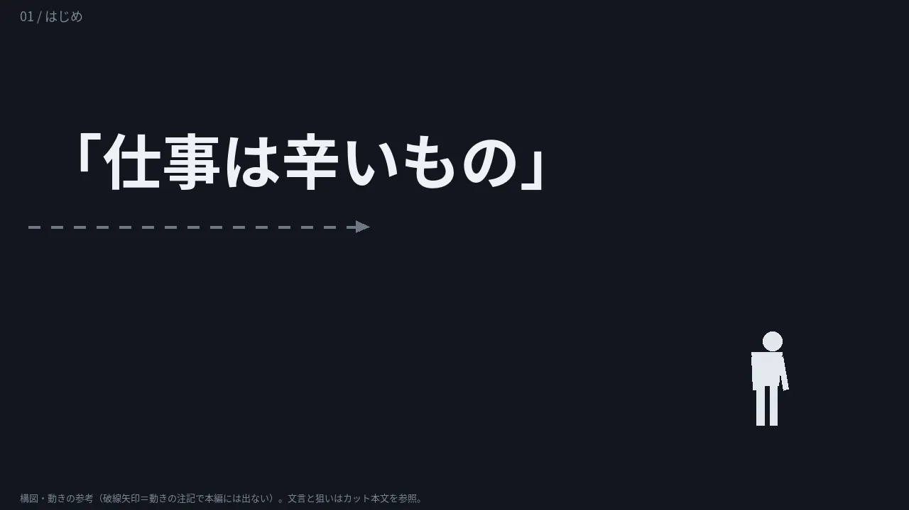

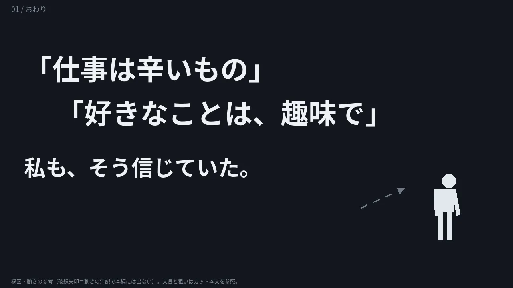
テロップ案
- 「仕事は辛いもの」
- 「好きなことは、趣味で」
- 私も、そう信じていた。
画面の内容／イメージ
思い込みの言葉が画面を占領し、人物を小さく押しやる。
ナレーション
なし（テロップのみ）
動き・カメラ
Dolly in。言葉の行が左右逆向きに流れ、最後の行で画面全体が人物へ寄る。
使うもの
文字・ピクト。素材なし。
差し替え候補
- 図解：二つの言葉を札にして積む
- ピクトグラムアニメ：札の重さで人物がうつむく
導入
本当に楽しかった
0:08–0:16 尺 約8秒 テロップ 38字

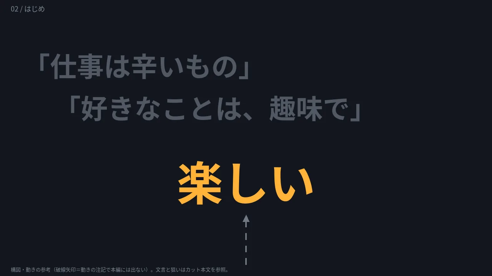

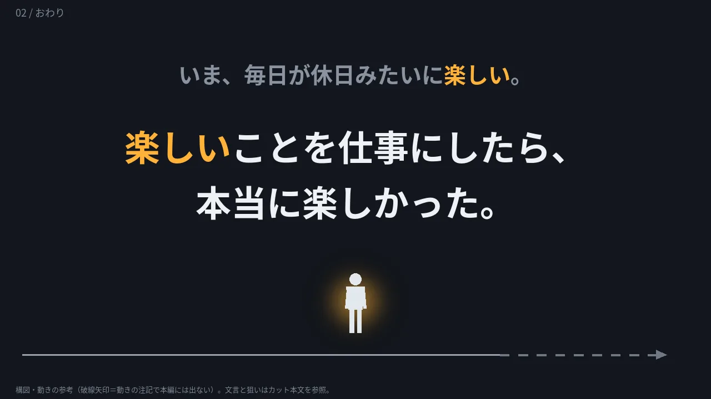
テロップ案
- いま、毎日が休日みたいに楽しい。
- 楽しいことを仕事にしたら、
- 本当に楽しかった。
画面の内容／イメージ
題名を一度大きく置き、これから時間を遡る線を準備する。
ナレーション
なし（テロップのみ）
動き・カメラ
Smash cut → Zoom out。題名の行がマスクから立ち上がり、最後に下端の線へ向けてカメラが引く。
使うもの
文字・ピクト・タイムライン線。
差し替え候補
- 図解：題名だけのタイポ
- ピクトグラムアニメ：人物が腕を上げる
20代：成果は出るが、楽しくない
20代、成果は出た
0:16–0:24 尺 約8秒 テロップ 38字

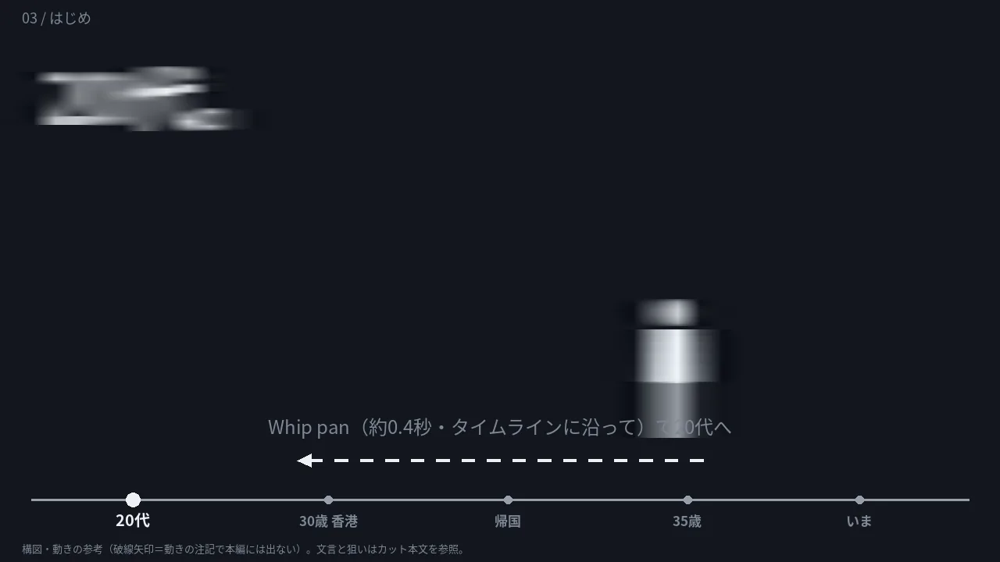

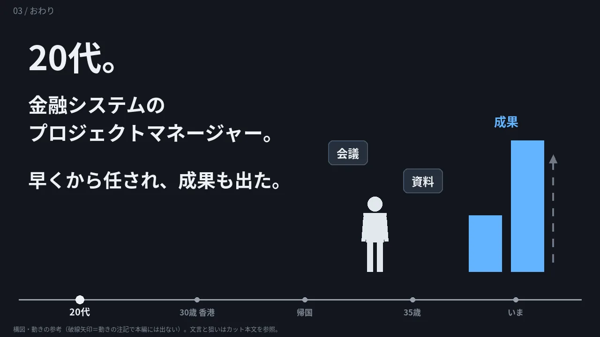
テロップ案
- 20代。
- 金融システムのプロジェクトマネージャー。
- 早くから任され、成果も出た。
画面の内容／イメージ
成果（青）は伸びるのに、楽しい（アンバー）はまだ画面にない。
ナレーション
なし（テロップのみ）
動き・カメラ
Whip pan（約0.4秒、タイムラインに沿って左へ）で着地 → 青い棒の伸びに合わせて Tilt up。
使うもの
文字・ピクト・タイムライン・成果の棒。素材なし。
差し替え候補
- 図解：成果の棒グラフ
- ピクトグラムアニメ：会議の札を回す人物
20代：成果は出るが、楽しくない
楽しいのは、休日のほう
0:24–0:32 尺 約8秒 テロップ 23字

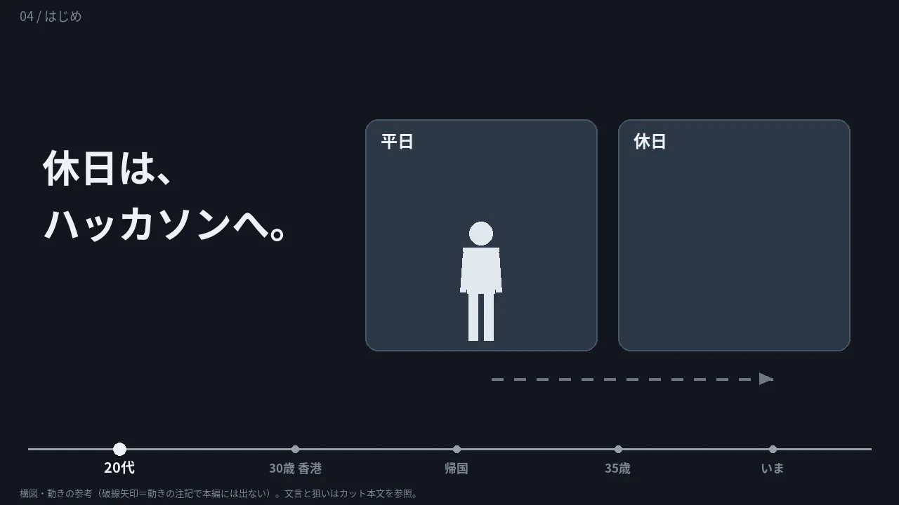

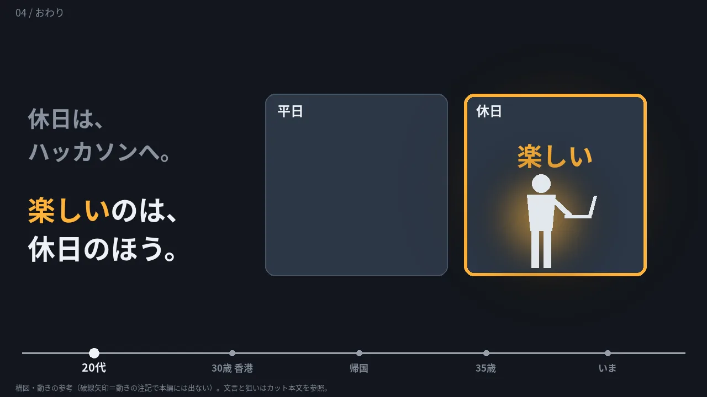
テロップ案
- 休日は、ハッカソンへ。
- 楽しいのは、休日のほう。
画面の内容／イメージ
1週間を左右の枠で見せ、「楽しい」の居場所を最初に定義する。
ナレーション
なし（テロップのみ）
動き・カメラ
Pan right。平日の枠から休日の枠へ画面ごと滑り、「楽しい」が枠の中へ落ちて止まる。
使うもの
文字・枠・ピクト。
差し替え候補
- 図解：1週間のカレンダーの7マス
- ピクトグラムアニメ：休日だけ人物が軽く跳ねる
20代：成果は出るが、楽しくない
平日は、苦しさが勝つ
0:32–0:40 尺 約8秒 テロップ 27字

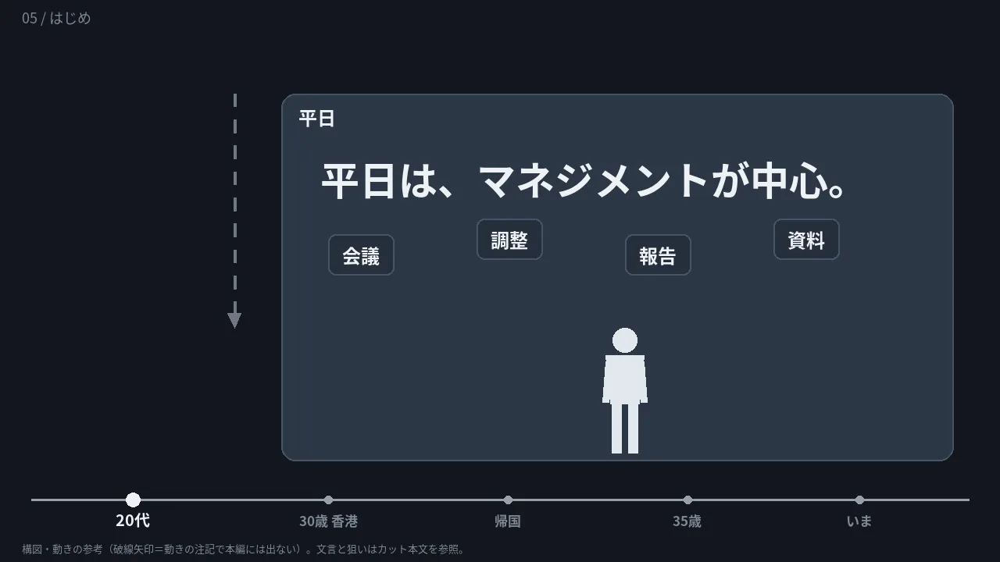

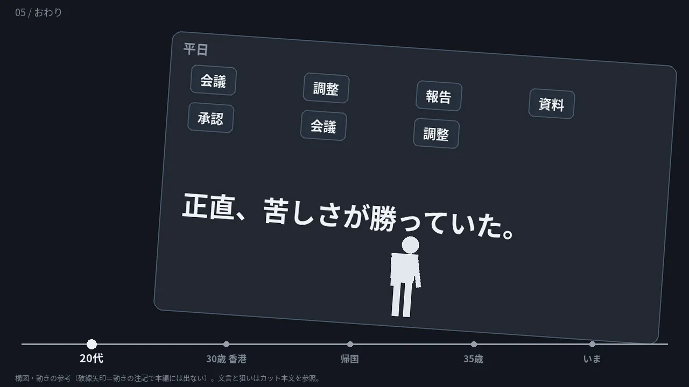
テロップ案
- 平日は、マネジメントが中心。
- 正直、苦しさが勝っていた。
画面の内容／イメージ
平日の枠が狭く重くなり、文字の塊が人物の上から降りてくる。
ナレーション
なし（テロップのみ）
動き・カメラ
Dolly in + 札の層を上から積み下ろす。最後に画面全体を少し傾けて（Dutch angle）重さを出す。
使うもの
文字・枠・札・ピクト。
差し替え候補
- ピクトグラムアニメ：札が積もって肩が下がる
- 図解：平日の枠が縮む
20代：成果は出るが、楽しくない
天職かもしれない
0:40–0:49 尺 約9秒 テロップ 31字

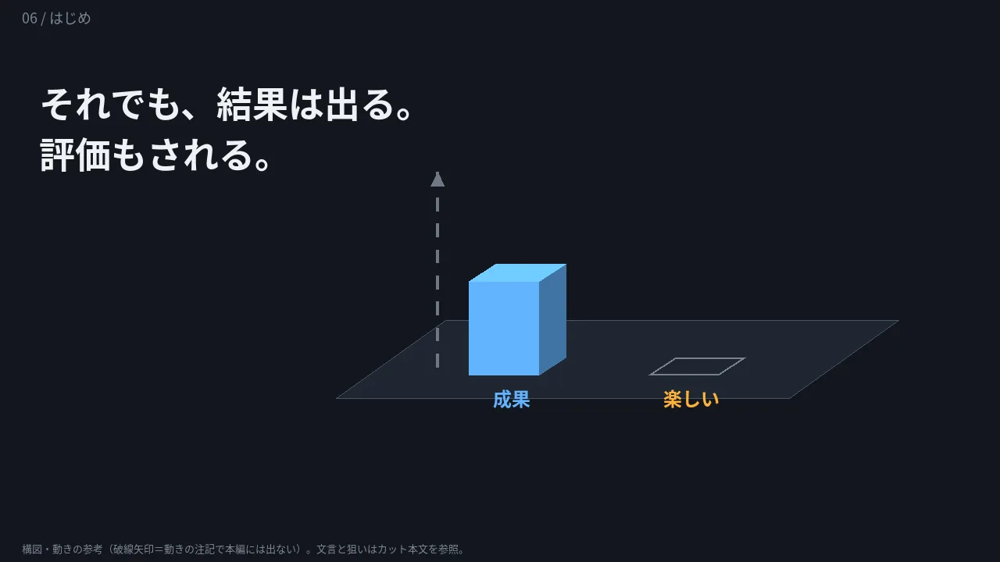

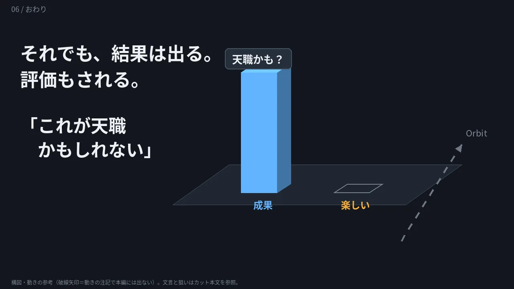
テロップ案
- それでも、結果は出る。評価もされる。
- 「これが天職かもしれない」
画面の内容／イメージ
成果の高さだけを見て天職と判断した構図を、立体の比較で見せる。
ナレーション
なし（テロップのみ）
動き・カメラ
Orbit（3D）。成果の柱の伸びに合わせて回り込み、札が乗った瞬間に止めずに次の線へ引く。
使うもの
3D比較（成果／楽しい）。素材なし。
差し替え候補
- 図解（2D）：二本の棒グラフ
- ピクトグラムアニメ：人物が柱を見上げる
30歳・香港：楽しいが平日へ
30歳、香港へ
0:49–0:55 尺 約6秒 テロップ 16字

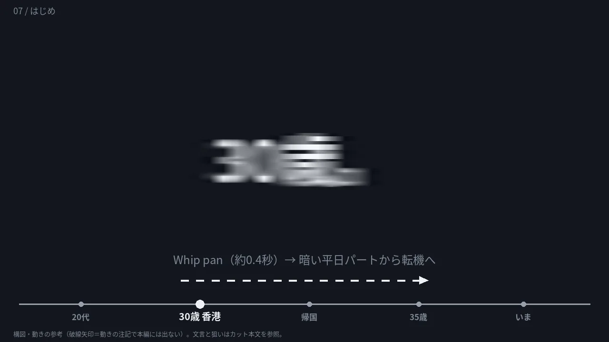

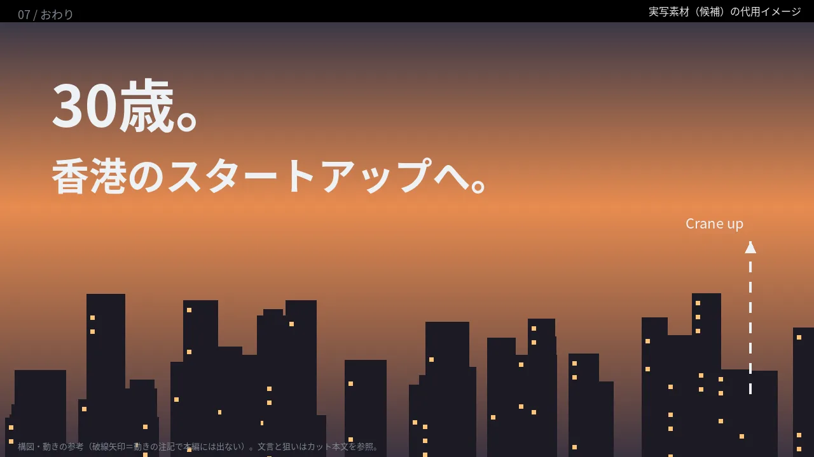
テロップ案
- 30歳。
- 香港のスタートアップへ。
画面の内容／イメージ
暗い平日パートから、夜明けの街へ明るさが切り替わる転機。
ナレーション
なし（テロップのみ）
動き・カメラ
Whip pan（約0.4秒）→ Crane up（実写6秒）。文字は行ごとに逆方向へ流れながら止まらない。
使うもの
実写素材（候補・未入手）。無い場合は代替のモーショングラフィックス。
差し替え候補
- 実写素材：夜明けの高層ビル群（Crane up、人物なし、6秒）
- 素材なし代替：灰色の「平日」ブロックと明るい「休日」ブロックが入れ替わるモーショングラフィックス
30歳・香港：楽しいが平日へ
楽しいが、平日へ
0:55–1:03 尺 約8秒 テロップ 22字

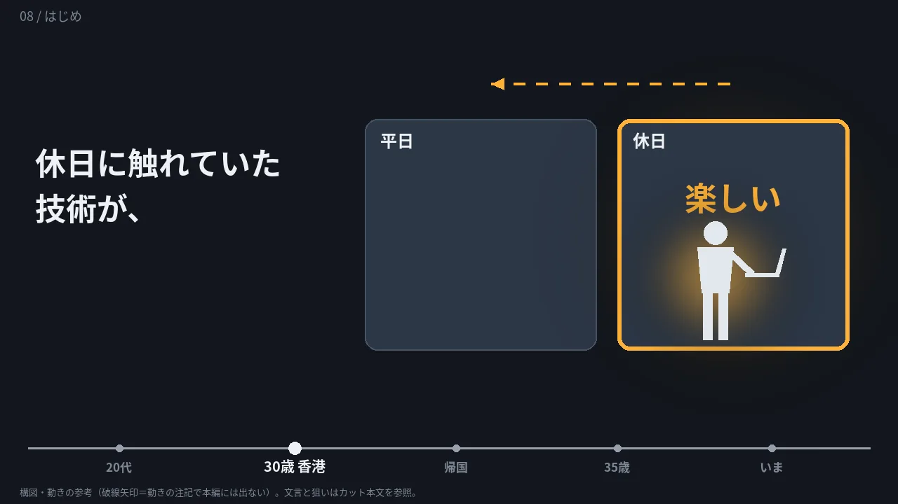

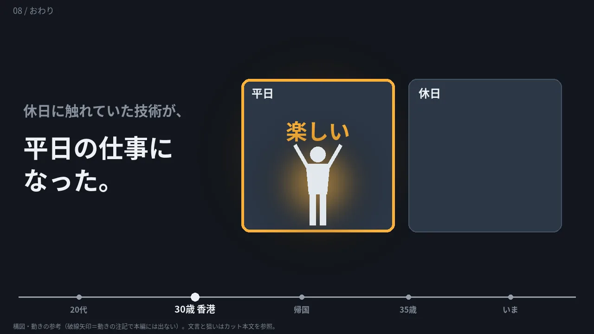
テロップ案
- 休日に触れていた技術が、
- 平日の仕事になった。
画面の内容／イメージ
04と同じ枠の構図で、「楽しい」の位置だけが変わったことをはっきり見せる。
ナレーション
なし（テロップのみ）
動き・カメラ
Whip pan（約0.4秒、横）で「楽しい」を休日→平日へ運ぶ。着地後も枠ごと横に流し続ける。
使うもの
文字・枠・ピクト（04と同じ配置）。
差し替え候補
- 図解：04と同じ枠の比較
- ピクトグラムアニメ：人物が枠を移る
30歳・香港：楽しいが平日へ
楽しい仕事でも、評価された
1:03–1:12 尺 約9秒 テロップ 46字

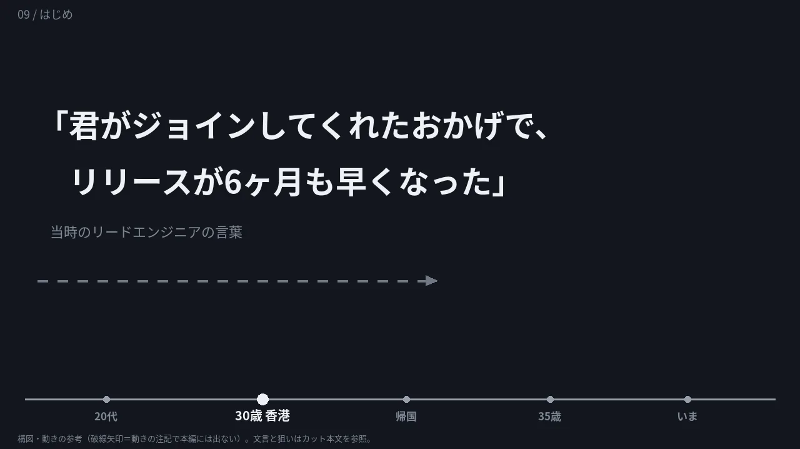

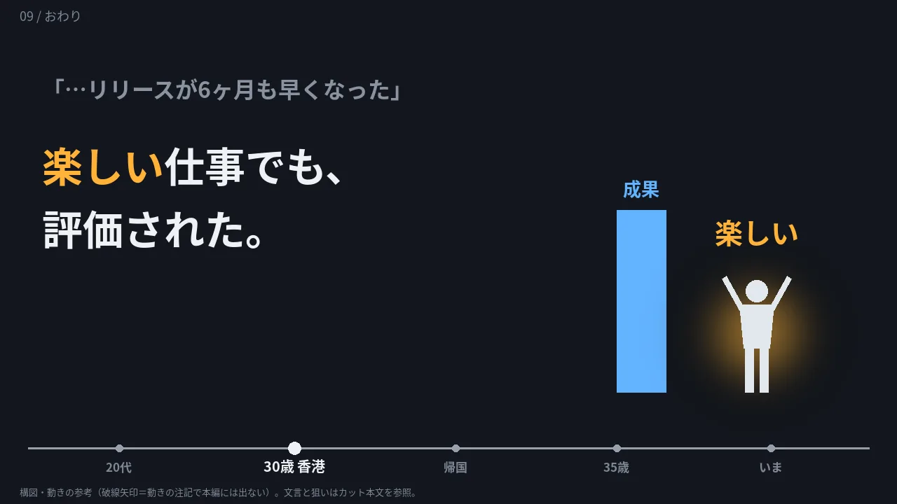
テロップ案
- 「君がジョインしてくれたおかげで、
- リリースが6ヶ月も早くなった」
- 楽しい仕事でも、評価された。
画面の内容／イメージ
成果と楽しいが両立した最初の場面。数字は引用の中だけに置く。
ナレーション
なし（テロップのみ）
動き・カメラ
Tracking shot。引用の行を追って横へ流れ、最後に成果と楽しいの二つが寄って並ぶ。
使うもの
文字・成果の柱・楽しいの札。
差し替え候補
- 図解：成果の柱と楽しいの札が並ぶ
- タイポのみ：引用を大きく
帰国：天職ではないと気づく
帰国、また成果は出た
1:12–1:20 尺 約8秒 テロップ 37字

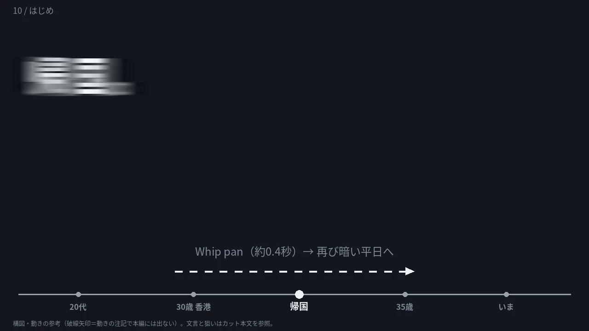

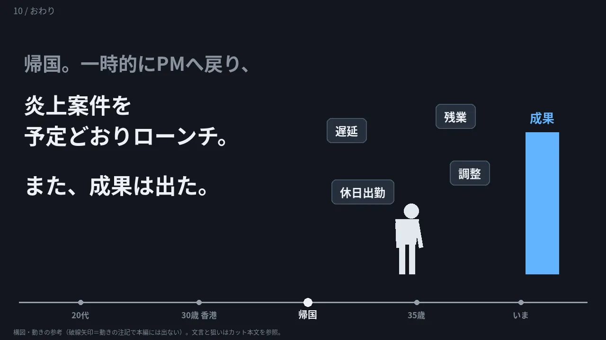
テロップ案
- 帰国。一時的にPMへ戻り、
- 炎上案件を予定どおりローンチ。
- また、成果は出た。
画面の内容／イメージ
20代と同じ構図に戻り、「同じことが起きた」と気づかせる。
ナレーション
なし（テロップのみ）
動き・カメラ
Whip pan（約0.4秒）で着地 → 札が四方から押し寄せ、画面全体を押し込む（Push in）。
使うもの
文字・ピクト・成果の柱・タイムライン。
差し替え候補
- ピクトグラムアニメ：火消しに走る人物
- 図解：遅延→ローンチの線
帰国：天職ではないと気づく
成果が出ても、天職ではない
1:20–1:29 尺 約9秒 テロップ 44字

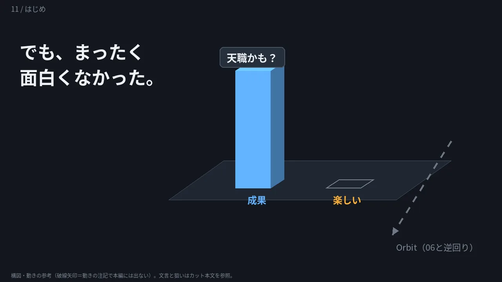

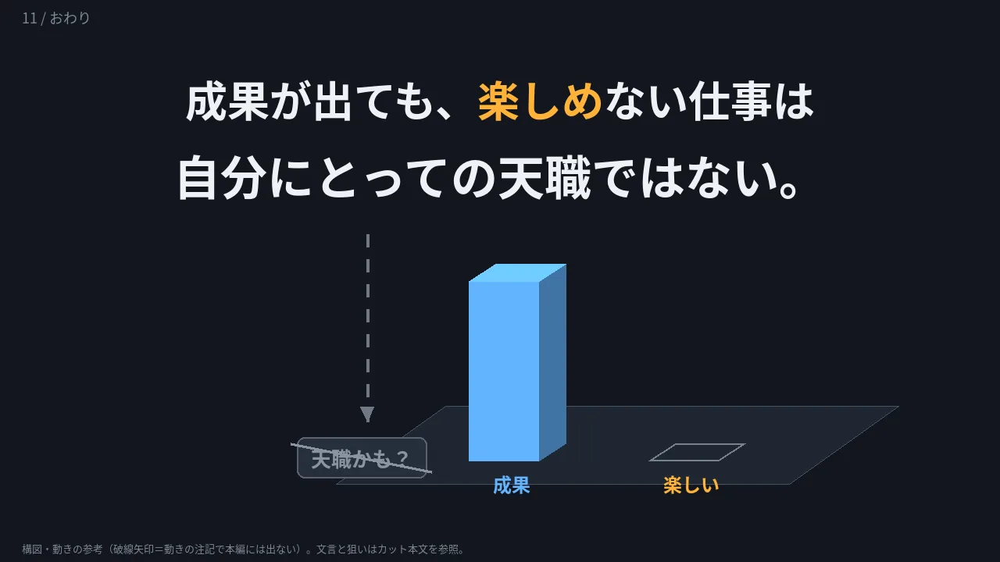
テロップ案
- でも、まったく面白くなかった。
- 成果が出ても、楽しめない仕事は
- 自分にとっての天職ではない。
画面の内容／イメージ
06の判断を同じ立体で否定する。この動画の主張の核。
ナレーション
なし（テロップのみ）
動き・カメラ
Orbit（3D）を06と逆回り → 札の落下に合わせてカメラが一段下がり、主張の行が左右から挟む。
使うもの
3D比較（06と同じ台）。
差し替え候補
- 図解（2D）：06と同じ棒グラフ
- タイポのみ：主張を大きく
帰国：天職ではないと気づく
キャリアは自分で作る
1:29–1:36 尺 約7秒 テロップ 39字

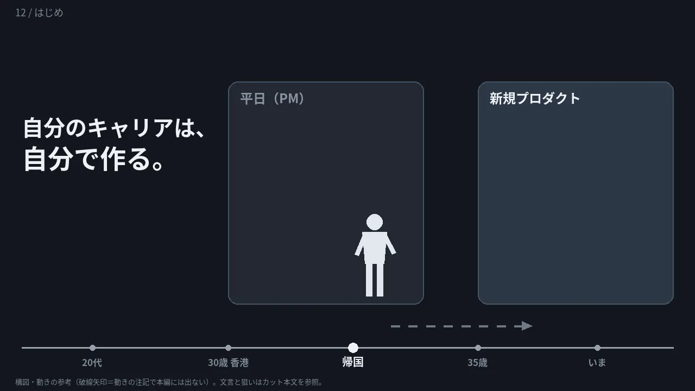

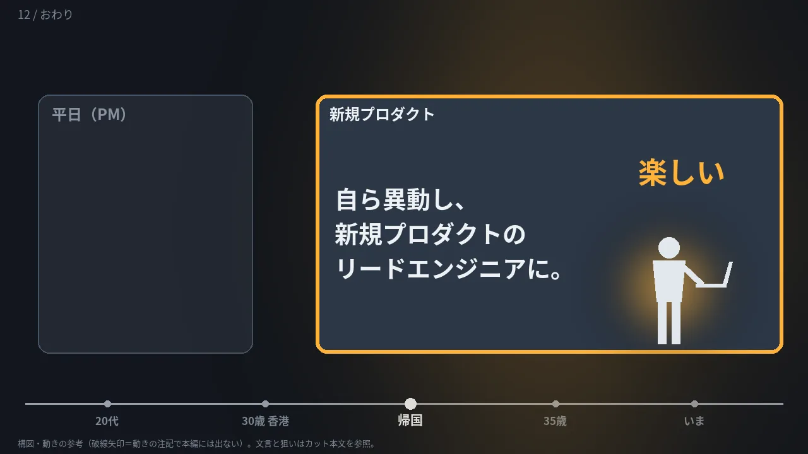
テロップ案
- 自分のキャリアは、自分で作る。
- 自ら異動し、新規プロダクトのリードエンジニアに。
画面の内容／イメージ
待つのではなく、自分で枠を移ったことを人物の移動で見せる。
ナレーション
なし（テロップのみ）
動き・カメラ
Tracking shot。人物の歩きに合わせて画面が横へ流れ、枠の境界をまたぐ。
使うもの
文字・ピクト・枠。
差し替え候補
- ピクトグラムアニメ：人物が枠をまたぐ
- 図解：部署の矢印
楽しさの中心が移る
楽しさの中心が移る
1:36–1:45 尺 約9秒 テロップ 29字

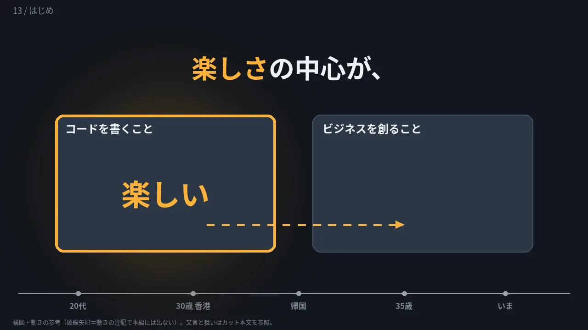

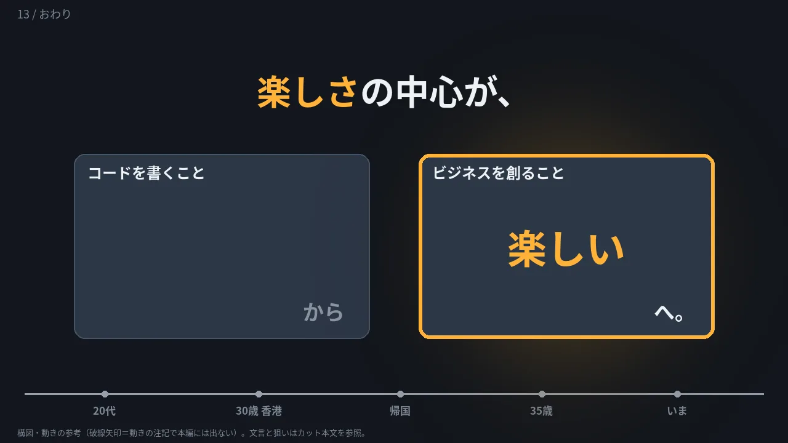
テロップ案
- 楽しさの中心が、
- コードを書くことから
- ビジネスを創ることへ。
画面の内容／イメージ
04・08と同じ枠の文法で、3回目の移動を見せる。
ナレーション
なし（テロップのみ）
動き・カメラ
Whip pan（約0.4秒、横）で「楽しい」を運ぶ。前後の行は逆方向へ流れ続ける。
使うもの
文字・枠。
差し替え候補
- 図解：04・08・13の枠を並べる
- タイポのみ：二つの語の入れ替え
楽しさの中心が移る
35歳、CTOへ
1:45–1:53 尺 約8秒 テロップ 46字

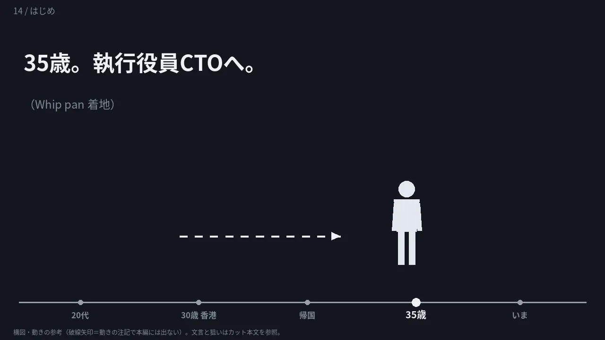

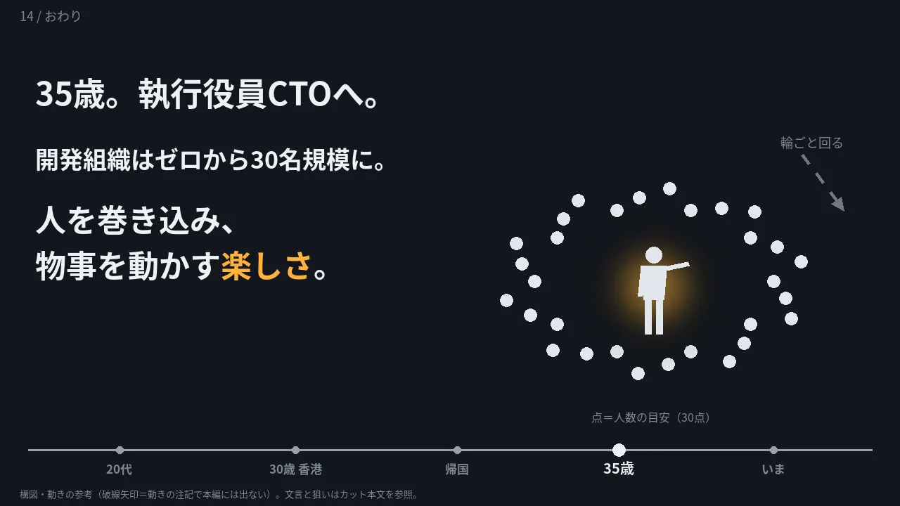
テロップ案
- 35歳。執行役員CTOへ。
- 開発組織はゼロから30名規模に。
- 人を巻き込み、物事を動かす楽しさ。
画面の内容／イメージ
一人で書く楽しさから、人を動かす楽しさへの変化を、点の増加で見せる。
ナレーション
なし（テロップのみ）
動き・カメラ
Whip pan（約0.4秒）→ Zoom out。点が増えるにつれ画面が引き、輪が回る。
使うもの
文字・ピクト・点（人数の目安図）。
差し替え候補
- 図解：組織の点が増える
- ピクトグラムアニメ：人物の周りに人が集まる
楽しさの中心が移る
書かない自分
1:53–2:02 尺 約9秒 テロップ 61字

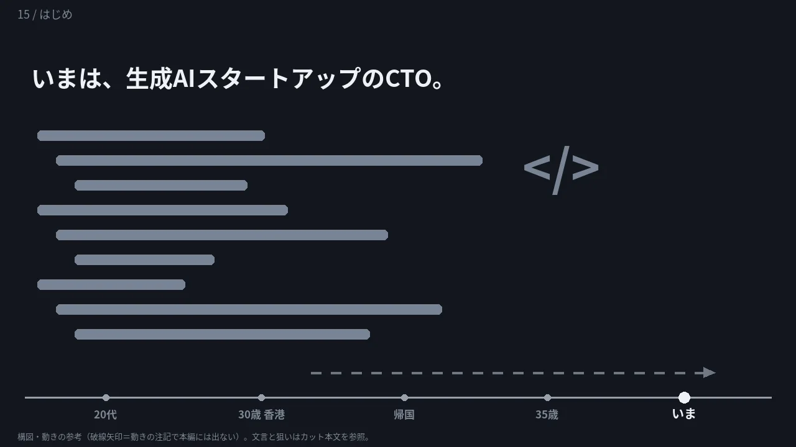

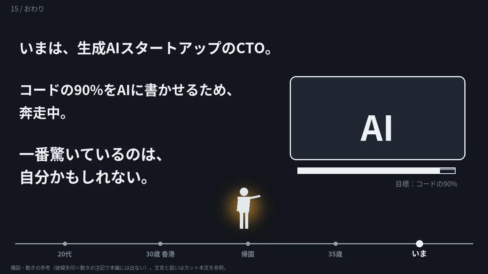
テロップ案
- いまは、生成AIスタートアップのCTO。
- コードの90%をAIに書かせるため、奔走中。
- 一番驚いているのは、自分かもしれない。
画面の内容／イメージ
かつての楽しさ（コード）を手放し、新しい楽しさに夢中な現在。
ナレーション
なし（テロップのみ）
動き・カメラ
Whip pan（約0.4秒）→ コード行が横へ高速で流れ、AIの枠へ吸い込まれる。
使うもの
文字・コード行・AIの枠・ピクト。
差し替え候補
- 図解：コード行の割合
- ピクトグラムアニメ：人物が指示を出す
結び
楽しいの循環
2:02–2:10 尺 約8秒 テロップ 36字

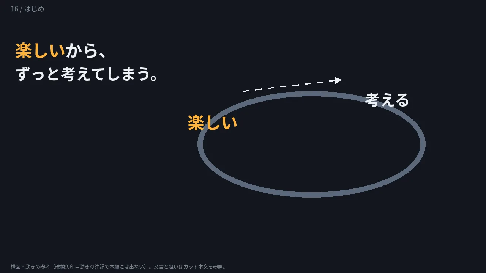

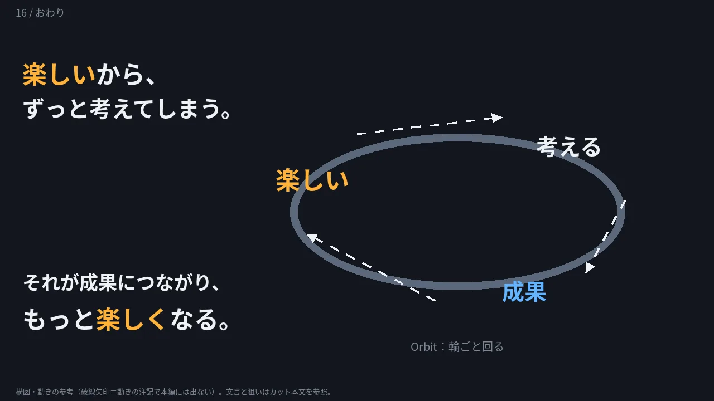
テロップ案
- 楽しいから、ずっと考えてしまう。
- それが成果につながり、
- もっと楽しくなる。
画面の内容／イメージ
楽しい→考える→成果→楽しい、の因果を立体の輪で見せる。
ナレーション
なし（テロップのみ）
動き・カメラ
Orbit（3D）。輪を斜め上から回り込み、輪の回転と行の流れを同期させる。
使うもの
3D循環図。
差し替え候補
- 図解（2D）：循環の矢印
- タイポのみ：3語の輪
結び
好きだから、極める
2:10–2:19 尺 約9秒 テロップ 46字

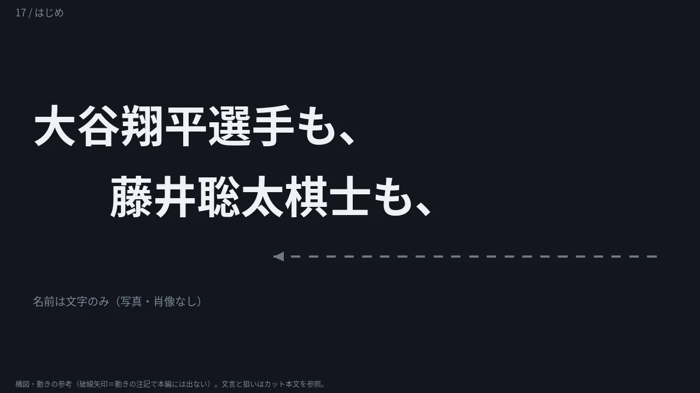

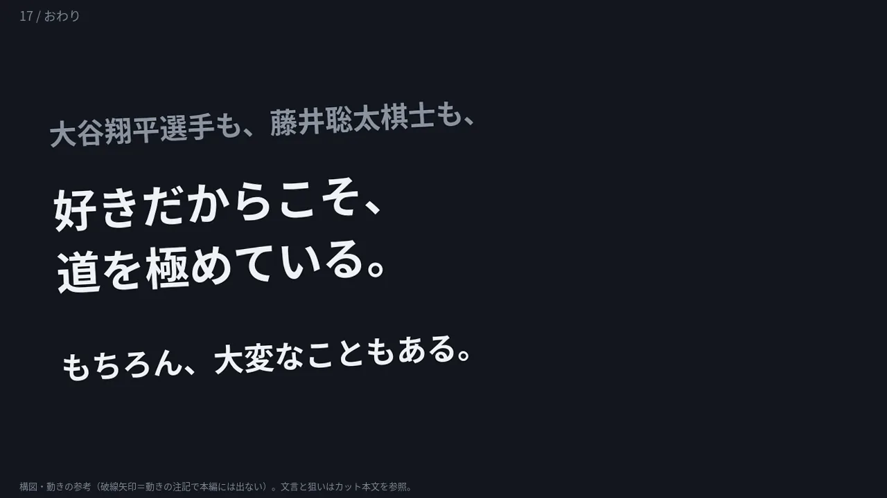
テロップ案
- 大谷翔平選手も、藤井聡太棋士も、
- 好きだからこそ、道を極めている。
- もちろん、大変なこともある。
画面の内容／イメージ
名前は文字だけ。肖像を使わず、留保を最後まで画面に残す。
ナレーション
なし（テロップのみ）
動き・カメラ
Pan left。名前の行が逆方向に流れ、画面全体がゆっくり回転しながら引く。
使うもの
文字のみ。人物写真・肖像は使わない。
差し替え候補
- タイポのみ（推奨）
- 図解：練習→試合の線
結び
あなたの「楽しい」は？
2:19–2:28 尺 約9秒 テロップ 54字

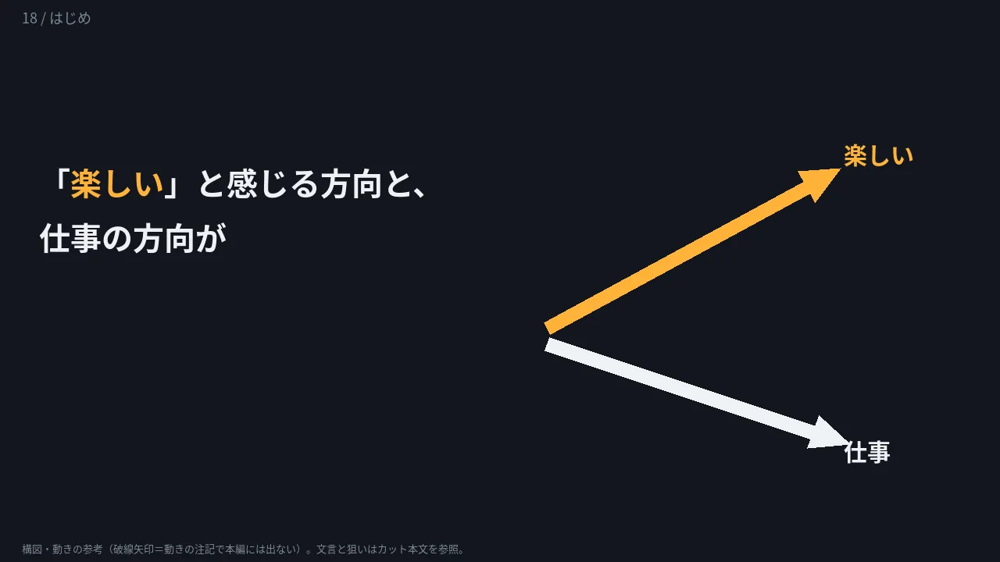

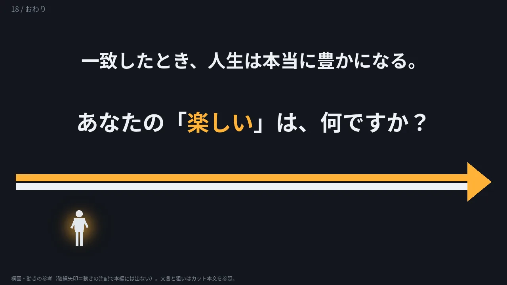
テロップ案
- 「楽しい」と感じる方向と、仕事の方向が
- 一致したとき、人生は本当に豊かになる。
- あなたの「楽しい」は、何ですか？
画面の内容／イメージ
二つの方向がそろう瞬間を矢印で見せ、問いを視聴者へ返す。
ナレーション
なし（テロップのみ）
動き・カメラ
Dolly in。矢印が回転してそろい、そのまま画面を突き抜ける勢いでエンドへ渡す。
使うもの
文字・矢印・ピクト。
差し替え候補
- 図解：二本の矢印
- ピクトグラムアニメ：人物が前を向いて歩く
エンドロゴ
エンドロゴ
2:28–2:33 尺 約5秒 テロップ 0字

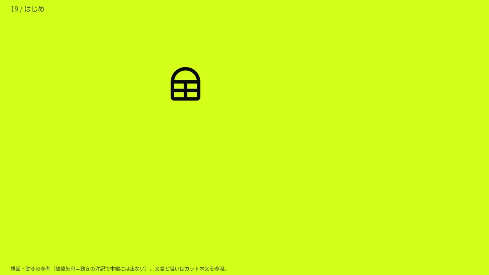

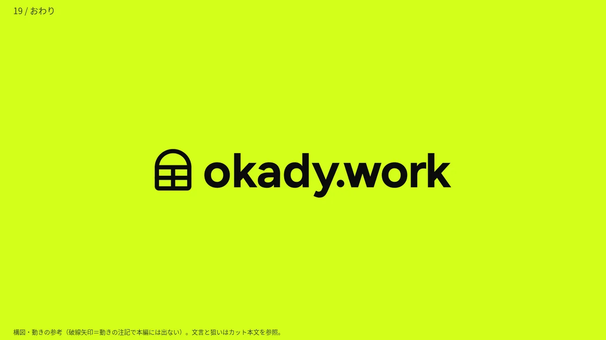
テロップ案
- （文字なし・ロゴのみ）
画面の内容／イメージ
ロゴ以外は置かない。
ナレーション
なし
動き・カメラ
リポジトリ既定のロゴアニメーション（o のバウンド→左スライド→「.work」）を再現。
使うもの
ロゴのみ（`okady-work-logo.svg`。絵コンテは logo.png で代用）。
差し替え候補
- （差し替えなし）
根拠との対応
詳細は references.md。
| 主張 | 根拠（原稿） | 留保 | カット |
|---|---|---|---|
| 「仕事は辛い」「好きは趣味で」と信じていた。いまは毎日が休日のように楽しい | 原稿冒頭 | いまの楽しさは筆者の主観 | 01–02 |
| 20代、PMとして成果・評価は得たが、平日は苦しさが勝ち、楽しいのは休日のハッカソンだった | 金融業界の節 | 金融の仕事自体に面白さも感じていた（全否定しない） | 03–05 |
| 結果が出たので「天職かもしれない」と感じた | 同上 | 断定ではなく「かもしれない」 | 06 |
| 30歳で香港のスタートアップへ（出向）。休日の技術が仕事になり、評価された | 香港の節 | 退職ではなく出向。6ヶ月はリードエンジニアの言葉 | 07–09 |
| 帰国後のPMで再び成果は出たが、面白くなかった。楽しめない仕事は自分にとっての天職ではない | 帰国の節 | 筆者自身の基準。一般論として断定しない | 10–11 |
| 自ら異動し新規プロダクトへ。楽しさの中心がコードからビジネスへ移った | 帰国の節の後半 | 移り変わりは時間をかけた変化 | 12–13 |
| 35歳でCTO、開発組織は30名規模へ。いまは生成AIスタートアップでコードの90%をAIに書かせるため奔走 | CTO・AI時代の節 | 30名＝開発組織の最終的な人数規模。90%＝目指している割合 | 14–15 |
| 楽しい→考え続ける→成果→もっと楽しい、の循環 | AI時代の節の末尾 | 筆者の実感 | 16 |
| 大谷翔平選手・藤井聡太棋士は好きだから道を極めている。大変なこともある。方向が一致すると人生は豊かになる | おわりに | 名前は文字のみ。大変さの留保を残す | 17–18 |
未確定事項・ユーザーに判断してほしい点
ユーザーに判断してほしい点
- 07の実写素材（夜明けの高層ビル群）を探して使うか、代替のモーショングラフィックス（平日／休日ブロックの入れ替え）にするか。
- 尺：約2分33秒・テロップ約665字（アイデアの約800字から削減）でよいか。
- ナレーションなし（テロップ主導）でよいか。
- 原稿の留保「好きなことを仕事にしたくない、という価値観も一つ」を画面に入れるか（現案は尺のため未収録。入れるなら17か18）。
- 「退職」ではなく「出向」で香港へ行った事実を画面に出すか（現案は出さない）。
未確定事項
- 15は約6.8字/秒でやや密。等速で読めるか確認し、必要なら行を削る。
- NANKA DEKIRU でのエフェクト適合確認は未実施（初版ラフのため）。
- 各カットの秒数は参考値。
確認状態
絵コンテ（静止画）のみ。等速では未確認。最終判断はユーザーレビュー。
BGM・効果音：全体の流れが決まってから検討。